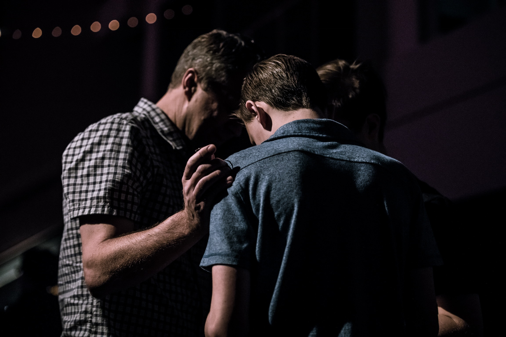

Fellowship with other church members is an important part of building trusting relationships and staying encouraged in your Christian walk. Join the congregation after service, meet new members, and have a bite to eat.

Every Wednesday at 6:30 PM members, non-members and guests meet in the Fellowship Hall for study of the Bible. Areas of the Scriptures that cannot be covered during Sunday services are explored. Expect lively discussion and dialog. Be sure to bring your thinking shoes and your favorite Bible.

An assortment of members, non-members and friends meet every 2nd Saturday at 7AM for an old-fashioned breakfast. Lively discussions and banter are always included on the menu. A topic from current news and events is presented and then guys tear into it to find a Bible/Christian perspective and response.

Typically, the 2nd Tuesday at 10 AM including a speaker. Please email or check the sign out-front for latest details.
Each Friday we have a movie and an informal pot-luck dinner starting at 5:30 PM in our fellowship hall.

Two twelve step support groups meet every week in CBC's Fellowship Hall.
Group 1- 7:30 PM Thursdays
Group 2- 7:00 PM Saturdays

The scope of missions at Campton Baptist Church varies widely from local outreaches, such as Halloween Outreach and Deacon's Fund, to national and international aid through American Baptist Churches of Vermont and New Hampshire, Compassion International, and Samaritan's Purse. Campton Baptist Church, along with its members and congregation, also supports local and regional charities and non-profit organizations, such Camp Sentinel, Haven Pregnancy Center (formally Care Net), Teen Challenge, and CARC(Campton Area Resource Center).